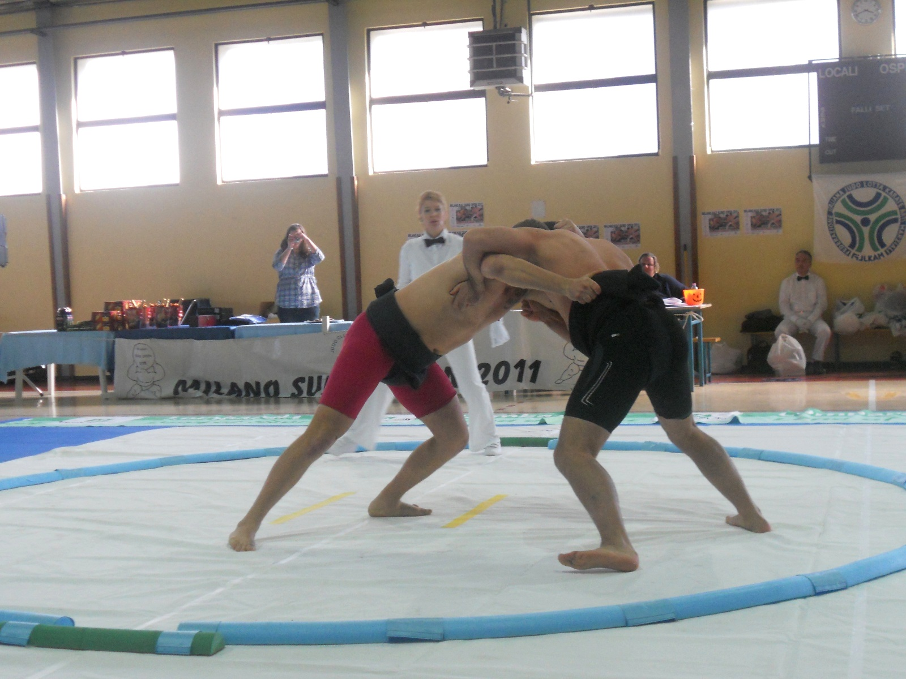

Πολλοί άνθρωποι έχουν την εντύπωση ότι το Σούμο είναι ένα άθλημα μόνο για πολύ μεγαλόσωμους ανθρώπους. Η εικόνα που υπάρχει στο μυαλό του κοινού είναι αυτή των επαγγελματιών Ιαπώνων αθλητών του OZUMO (επαγγελματικό Σούμο), οι οποίοι συχνά έχουν μεγάλο σωματικό βάρος, διότι στο OZUMO δεν υπάρχουν κατηγορίες κιλών. Η πραγματικότητα όμως είναι πολύ διαφορετική.
Το Σούμο είναι στην ουσία μια μορφή πάλης, στην οποία δύο αθλητές προσπαθούν να διαταράξουν την ισορροπία ο ένας του άλλου. Ο στόχος είναι είτε να ρίξεις τον αντίπαλο στο έδαφος είτε να τον αναγκάσεις να βγει έξω από τον κύκλο. Η τεχνική, η ισορροπία και ο σωστός συγχρονισμός παίζουν τεράστιο ρόλο. Το σωματικό βάρος είναι ένας παράγοντας, αλλά δεν είναι ο μοναδικός ούτε ο σημαντικότερος.
Στην πραγματικότητα, το ερασιτεχνικό Σούμο περιλαμβάνει κατηγορίες βάρους. Αυτό σημαίνει ότι οι αθλητές αγωνίζονται με αντιπάλους παρόμοιου σωματικού μεγέθους. Όπως συμβαίνει σε όλα σχεδόν τα μαχητικά αθλήματα, ο διαχωρισμός σε κατηγορίες υπάρχει ακριβώς για να διατηρείται η ισορροπία και η δικαιοσύνη στους αγώνες.
Στις μικρές ηλικίες το σωματικό βάρος παίζει ακόμη μικρότερο ρόλο. Τα παιδιά που ξεκινούν την προπόνηση στο Σούμο μαθαίνουν πρώτα βασικές κινητικές δεξιότητες: ισορροπία, μεταφορά βάρους, σωστή στάση σώματος και συνεργασία με τον αντίπαλο.
Η προπόνηση περιλαμβάνει παιχνίδια, ασκήσεις συντονισμού και απλές μορφές πάλης. Στην επιστήμη της φυσικής αγωγής αυτά τα στοιχεία εντάσσονται στη κινητική μάθηση, δηλαδή στην ανάπτυξη των βασικών κινητικών προτύπων του σώματος. Σε αυτές τις ηλικίες δεν υπάρχει καμία απολύτως ανάγκη για μεγάλο σωματικό βάρος.
Ένα σημαντικό στοιχείο του Σούμο είναι ότι διδάσκει τον αθλητή να χρησιμοποιεί το σώμα του αποτελεσματικά. Η ισορροπία, η σωστή τοποθέτηση των ποδιών, η χρήση του κέντρου βάρους και η κατανόηση της κίνησης του αντιπάλου αποτελούν βασικές αρχές της βιομηχανικής της κίνησης.
Όταν το κέντρο βάρους του αντιπάλου μετατοπιστεί εκτός της βάσης στήριξης, η πτώση μπορεί να προκληθεί ακόμη και από έναν μικρότερο αθλητή. Για τον λόγο αυτό η τεχνική και η σωστή τοποθέτηση του σώματος παίζουν καθοριστικό ρόλο στα παλαιστικά αθλήματα.
Στην προπόνηση του Σούμο δίνεται μεγάλη έμφαση στη φυσική κατάσταση. Οι αθλητές αναπτύσσουν δύναμη και εκρηκτικότητα κυρίως στα κάτω άκρα, αλλά και σταθερότητα στον κορμό.
Οι μύες του κορμού λειτουργούν ως σταθεροποιητές και επιτρέπουν τη μεταφορά δύναμης από τα πόδια προς το άνω μέρος του σώματος. Στην αθλητική επιστήμη αυτό ονομάζεται μεταφορά κινητικής αλυσίδας.
Οι περισσότεροι αγώνες Σούμο διαρκούν λίγα δευτερόλεπτα. Για τον λόγο αυτό η παραγωγή ενέργειας βασίζεται κυρίως στο αναερόβιο αγαλακτικό σύστημα (ATP-CP), το οποίο χρησιμοποιείται σε εκρηκτικές προσπάθειες μικρής διάρκειας.
Η άμεση ενεργοποίηση των μυϊκών ινών επιτρέπει στον αθλητή να παράγει μεγάλη δύναμη σε πολύ μικρό χρονικό διάστημα. Στη φυσιολογία της άσκησης αυτό συνδέεται με τη λειτουργία των ταχέων μυϊκών ινών (τύπου II), οι οποίες είναι υπεύθυνες για την παραγωγή εκρηκτικής δύναμης.
Η προπόνηση στο Σούμο βελτιώνει:
Οι προσαρμογές αυτές είναι κυρίως νευρομυϊκές, δηλαδή το νευρικό σύστημα μαθαίνει να ενεργοποιεί αποτελεσματικότερα τις μυϊκές ομάδες που συμμετέχουν στην κίνηση.
Το Σούμο δεν απαιτεί ιδιαίτερη ευλυγισία ή ακροβατικές κινήσεις για να ξεκινήσει κάποιος. Σε αντίθεση με άλλες πολεμικές τέχνες που βασίζονται σε λακτίσματα ή πολύπλοκες τεχνικές, το Σούμο στηρίζεται σε φυσικές κινήσεις του σώματος, όπως το σπρώξιμο, το τράβηγμα και η προσπάθεια διατήρησης της ισορροπίας.
Για τον λόγο αυτό το άθλημα είναι προσιτό σε ανθρώπους με διαφορετικούς σωματότυπους. Υπάρχουν αθλητές πιο ψηλοί, πιο χαμηλοί, πιο βαριοί ή πιο ελαφριοί. Ο καθένας αναπτύσσει τον δικό του τρόπο πάλης ανάλογα με τα φυσικά του χαρακτηριστικά.
Το Σούμο δεν είναι άθλημα μόνο για μεγαλόσωμους ανθρώπους. Το σωματικό βάρος μπορεί να προσφέρει ορισμένα πλεονεκτήματα, όμως οι καθοριστικοί παράγοντες είναι η τεχνική, η ισορροπία, η νευρομυϊκή προσαρμογή και η σωστή χρήση του σώματος.
Συμπερασματικά, το Σούμο είναι ένα άθλημα ανοιχτό σε όλους. Δεν χρειάζεται κάποιος να είναι μεγαλόσωμος για να ξεκινήσει. Μήτε χρειάζεται να γίνει. Αυτό που χρειάζεται είναι διάθεση για άσκηση, συνέπεια στην προπόνηση και ενδιαφέρον για την ανάπτυξη της δύναμης, της ισορροπίας και της τεχνικής.
